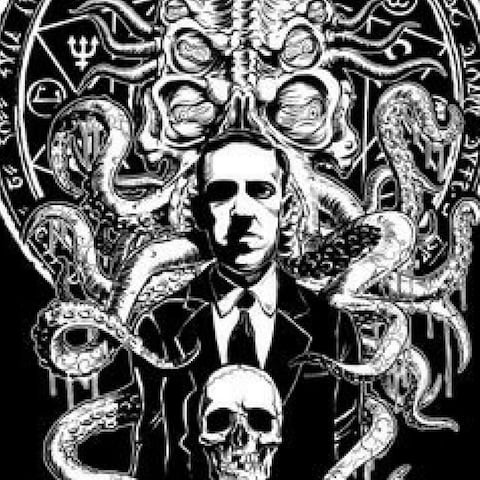

Lovecraft, New York'a ilk taşındığında yazarların küçük "Kalem Kulübü" ne katıldı ve daha sonra "Lovecraft Çemberi" olarak bilinen daha geniş bir yazar grubunun merkezi olacaktı. Bu grup, aralarında sık sık ayrıntıları paylaşan hikayeler yazdı. Aynı zamanda üretken bir mektup yazarıydı. Birkaç farklı yazar ve edebiyatçı ile yazışmalar sürdürdü. Bazı tahminlere göre hayatı boyunca yaklaşık 100.000 mektup yazdı. Bu mektuplarda dünya görüşünü ve günlük hayatını tartıştı ve August Derleth, Donald Wandrei ve Robert Bloch gibi genç yazarlara ders verdi. Lovecraft, yetişkin yaşamı boyunca bir yazar ve editör olarak kazandığı kazançtan kendisini asla destekleyemedi. Yaşamı boyunca neredeyse hiç bilinmiyordu ve 46 yaşında yoksulluk içinde ölmeden önce neredeyse tamamen ucuz dergilerde yayınlandı, ancak şimdi 20. yüzyılın en önemli doğaüstü korku kurgu yazarlarından biri olarak kabul ediliyor. En ünlü öyküleri arasında "Cthulhu'nun Çağrısı", "Duvarlardaki Fareler",> Delilik Dağlarında, Innsmouth'un Gölgesi ve Zamanın Dışındaki Gölge vardır. Yazıları, Lovecraft'ın karakterleri, ortamı ve temalarından yararlanarak, Lovecraft'ın korkusu olarak bilinen daha geniş bir alt tür oluşturan çeşitli ortamlarda geniş bir pastiş kitlesine ilham veren Cthulhu Mythos'un temelini oluşturur. |